新截图是 1180×757 播放器 viewport JPEG，含标题栏与播放器叠层；标注框仅定位观察区域，不是几何量测。禁止用于 1920 原生像素残差或相机验收。原生 F/G 单独标识。所有图片均逐字节复制，框线由网页矢量层绘制。
A：单端板与一完整孔；B：床垫外侧/窄托边；C：下方托架、斜撑和圆形连接局部；D：单处轮脚且部分受 UI 遮挡；E：双孔＋中央凹槽＋浅拱端板；F：后方电视；G：顶上两平行杆及短连接件；H：木桌与通话设备。框线重叠不表示构件连接。
低机位仅见单端板局部、一个完整孔、中央凹槽疑似局部；床垫外侧、托架/斜撑、单处轮脚有新增信息。不是患者眼位标定图。
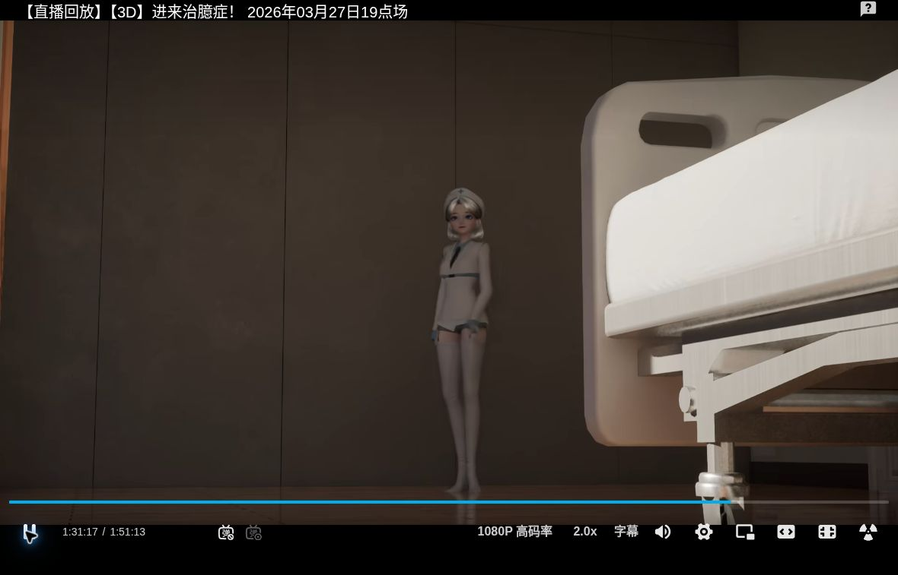
原图：obs_5476.600449.jpg；保留原文件字节，未调光、锐化、补画或重采样。
紧邻渐暗帧仍呈相同局部床构成。曝光更差，未补出第二端板或完整长侧。
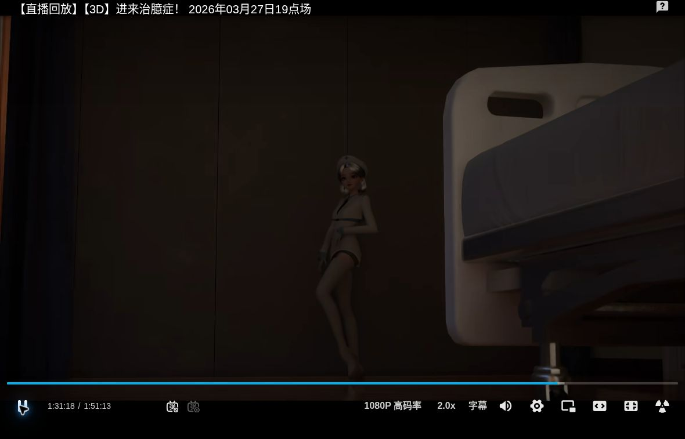
原图：obs_5477.528817.jpg；保留原文件字节，未调光、锐化、补画或重采样。
双孔、中央长圆角凹槽与浅拱轮廓清楚；床端—电视—左窗—双杆的共现关系可与 F/G 对照。
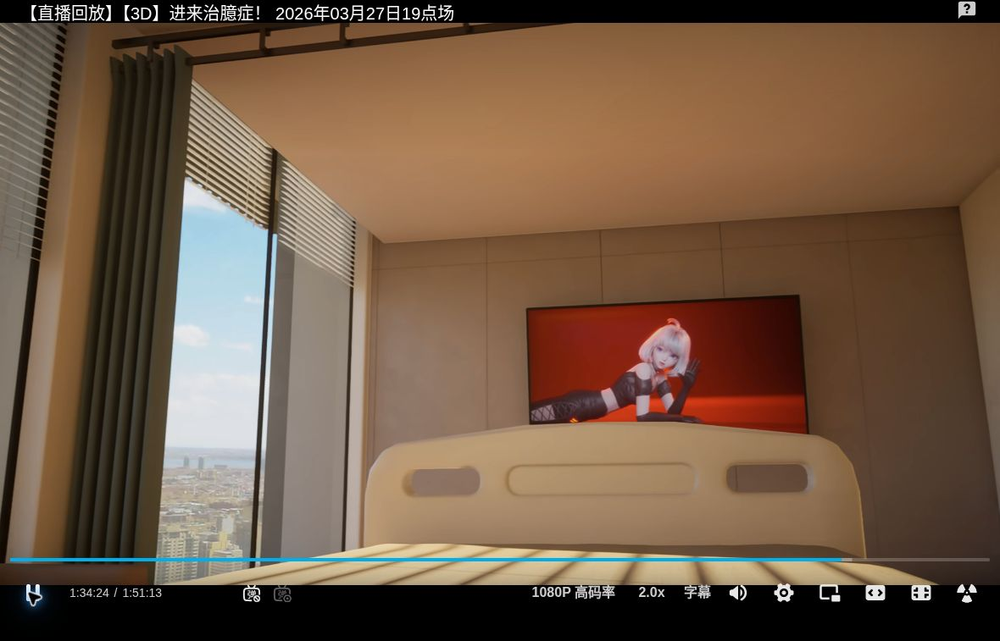
原图：obs_5663.912151.jpg；保留原文件字节，未调光、锐化、补画或重采样。
近邻视角重复双孔与凹槽；床端遮住电视下缘。只支持此视角的投影遮挡，不等于电视/床端实体等高。
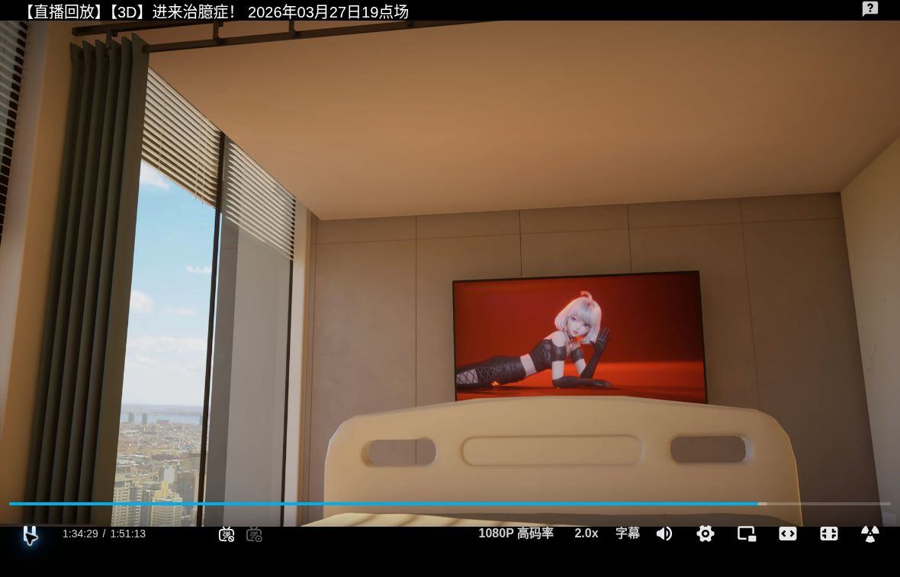
原图：obs_5668.329653.jpg；保留原文件字节，未调光、锐化、补画或重采样。
相同床端特征与电视/左窗/上方双杆共现，右缘有门局部。镜头姿态不同，不能直接与前帧做刚性像素差。
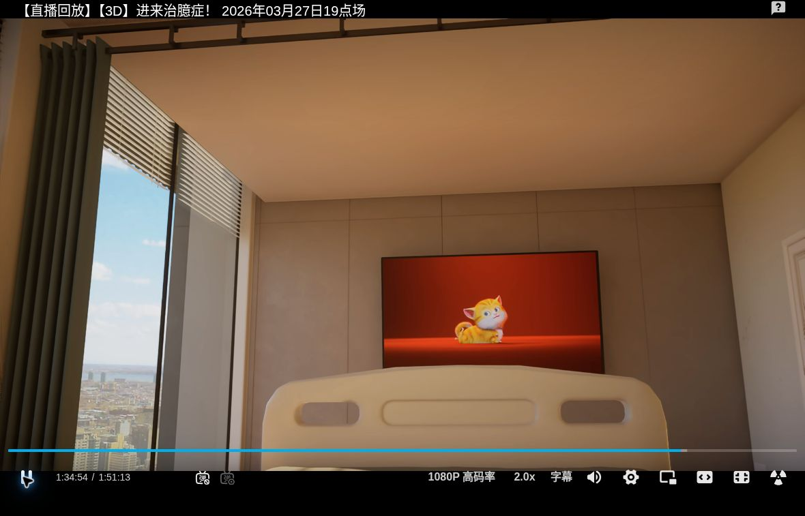
原图：obs_5693.628433.jpg；保留原文件字节，未调光、锐化、补画或重采样。
前景是有木纹的桌面，放着通话屏设备；左侧绿椅，后方棕色双坐垫沙发。此图没有可确认的病床几何。
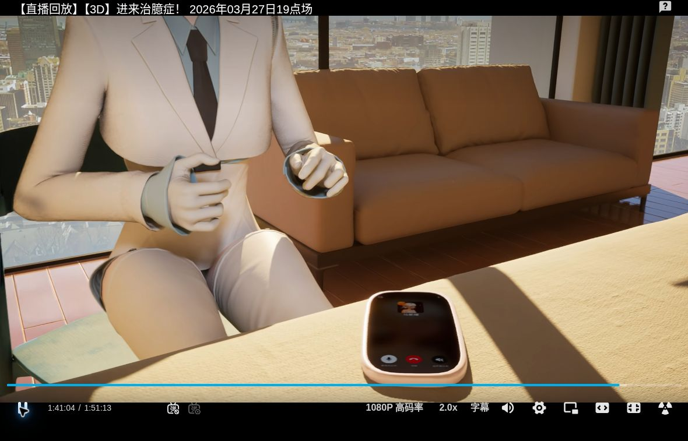
原图：obs_6063.423552.jpg；保留原文件字节，未调光、锐化、补画或重采样。
原生 F 底部截去大部分端板；保留孔上部、中央凹槽上缘及同组电视/左窗/双杆。心率叠字不是几何。
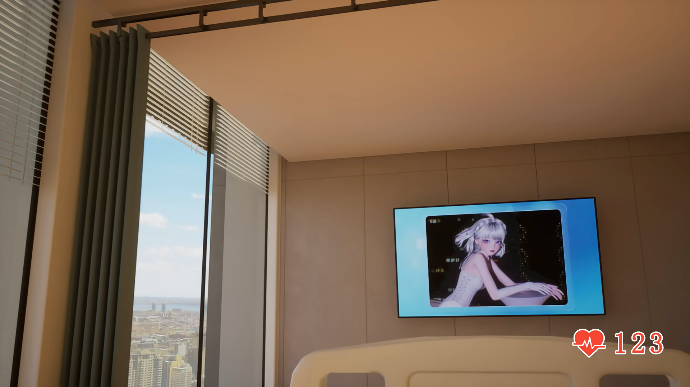
原图：hospital-F-tv-BV1GqXMByE1s-t1823.678156-native.png；保留原文件字节，未调光、锐化、补画或重采样。
原生 G 右缘只有单孔与中央凹槽局部；右下可见浅色前景面与条状投影，但床垫/桌面身份仍待定。紧邻端板不足以证明同一实体，此图也不提供完整床侧。
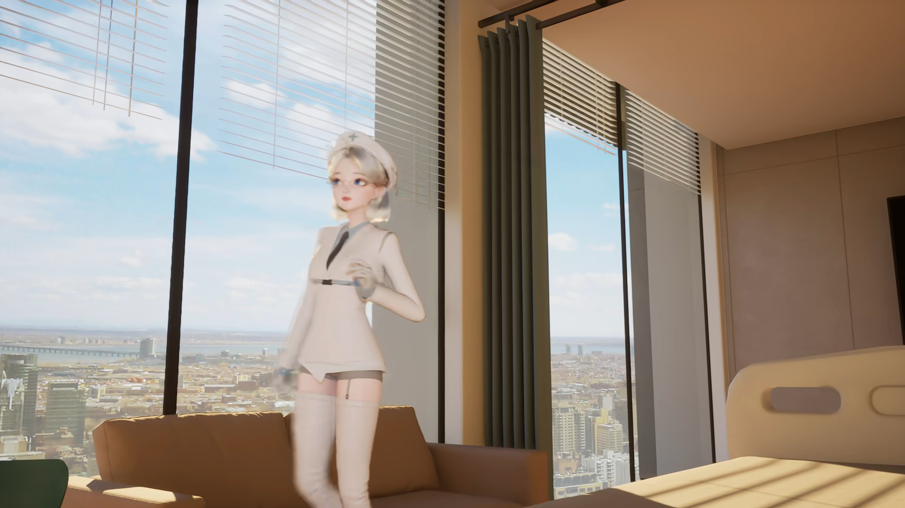
原图：hospital-G-bed-edge-BV1GqXMByE1s-t1116.180816-native.png；保留原文件字节，未调光、锐化、补画或重采样。
前景可直接见浅木纹、平整板面与较硬直的远侧边缘，判为木桌面高置信。条状暗带为落在板面的阴影，不是阶梯体块。
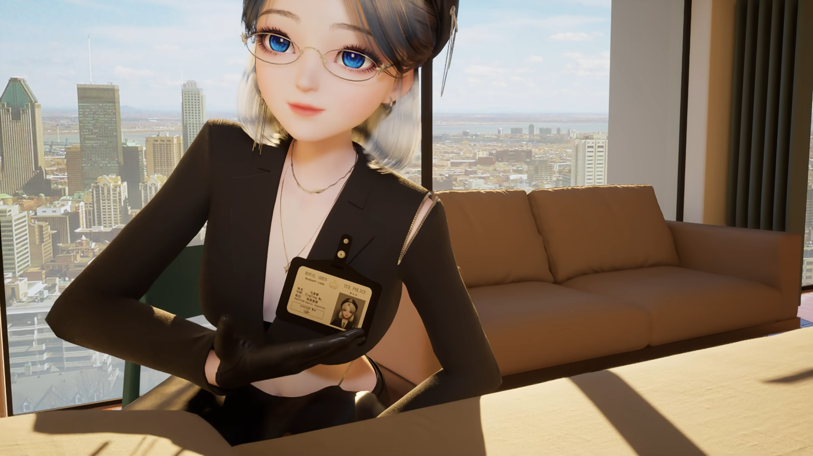
原图：BV1GqXMByE1s_665.501733_downward_native.png；保留原文件字节，未调光、锐化、补画或重采样。
底部仅露窄浅色前景面。右侧上边略不规则，表面有暗条；可确认平面及遮挡边界，身份待定，不强制改为桌或床。
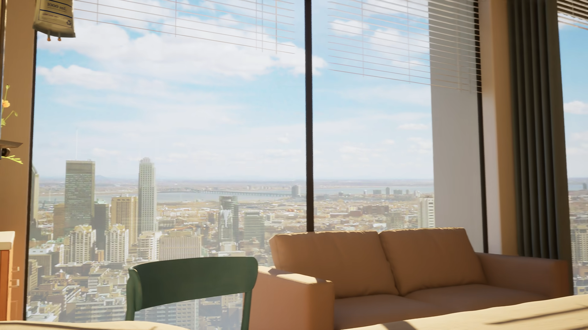
原图：BV1GqXMByE1s_640.406589_empty_hospital_native.png；保留原文件字节，未调光、锐化、补画或重采样。
底部前景更窄；标注点只表示可见浅色表面，不能从窄条恢复厚度、床阶梯或桌腿。
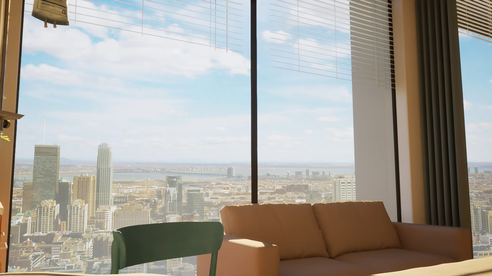
原图：hospital-H-window-BV1GqXMByE1s-t1101.728114-native.png；保留原文件字节，未调光、锐化、补画或重采样。
独立目视确认：棕墙前人物正面 → 5476 低机位床 → 5477–5479 变暗 → 5480–5481 帘前演出；不是低机位床直接切电视。此页为已有缩略汇总，不能做细节或像素测量。
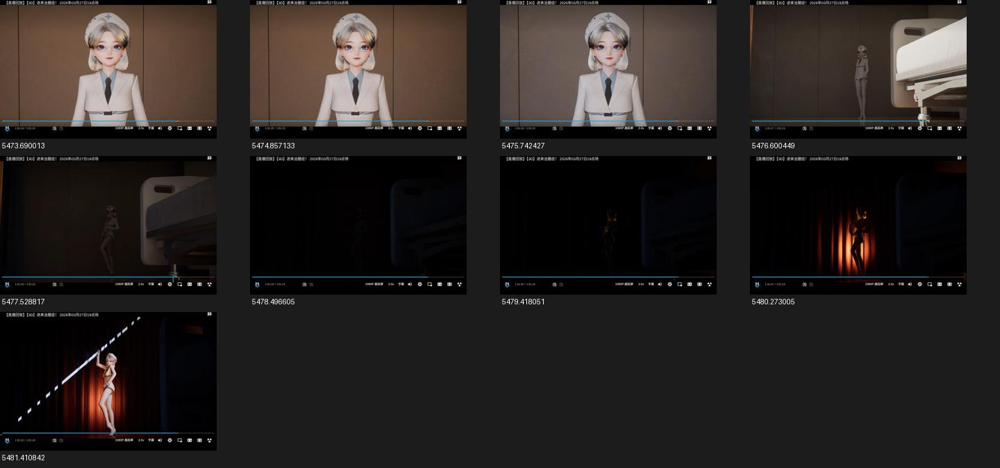
原图：review_5473_5482.jpg；保留原文件字节，未调光、锐化、补画或重采样。
结论详见 independent_visual_review.md；源文件身份与尺寸详见 source_manifest.json。